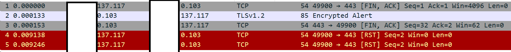
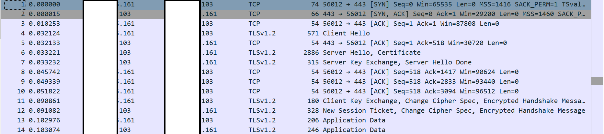
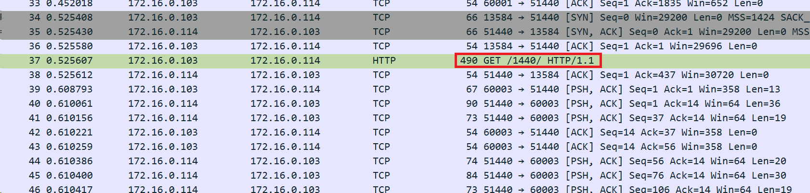
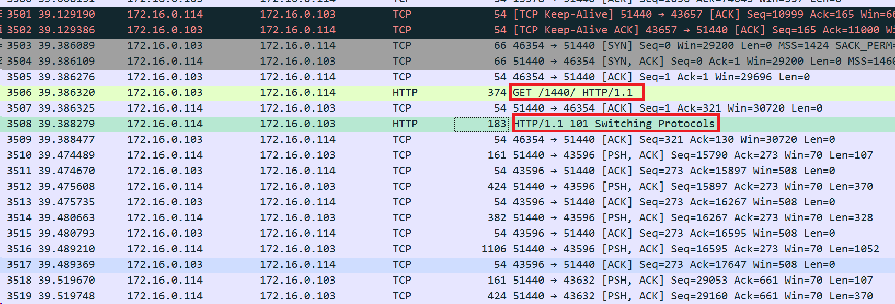
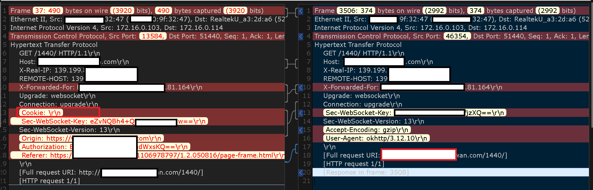

问题背景
我们是一家H5的研发公司.
运营突然报业务故障, 玩家登录不了(监控没做好, 真的是没人啊..)
点击进入游戏时转圈圈, 提示连接超时(找不到图了, 发挥一下想象吧)
排查思路
经过我们的沟通, 得出信息
- 只有IOS的用户有问题
- 只有某个特殊渠道有问题
- 同样的手机访问其他游戏没问题
- 同样的账号换手机登录没问题
- 没有更新版本和变动
这样来看, 肯定是渠道方更新了什么导致的故障
客户端只有连接超时的信息.
服务端上只有一行http hand failed, 没有任何其他信息
代理端HTTP数据包分析
之前忘了说, 我们的架构是这样的.
(游戏行业里算是有点奇葩的, 据说是因为server的框架不支持https)1
2 https http
client --------> nginx -------> server
故障的TCP数据包

正常的TCP数据包

可以看到, 有故障的TCP数据包, 被客户端REST断开了.
结合服务端日志来看, 应该是在HTTP请求的时候出错了.
因为都是HTTPS的连接, 所以无法查看请求的信息.
尝试了很多解密的方式都无果.
最后没办法, 只能在服务端进行抓包.
服务端HTTP数据包分析
我们在服务端上抓包, 对比正常的请求, 和异常的请求
异常的http数据包

正常的http数据包

终于找到问题了, 服务端没有返回http的websocket的请求
问题又来了, 为什么没有返回请求?
服务端HTTP请求信息分析
从服务端的错误信息来看, 肯定是服务端处理http请求的时候出错了.
所以我们再来对比下两个请求的http信息
左边是异常的http请求信息, 右边是正常的http请求信息

看到一个很奇怪的头信息Cookie, 这个头信息是空的.
为什么头信息是空的值得怀疑?
因为所有其他的头信息看起来都是正常的
所以只能先排除这个最明显的异常.
我们找了个服务进行测试, 在代理端通过proxy_set_header Cookie "";
最后reload后, 这个服务正常了.
以上.
复盘总结
业务监控
因为游戏行业有上万个独立的服务, 监控覆盖的成本非常高.
而且我们做了日志的监控, 但是这个日志不是标准的错误格式, 所以根本没法捕捉到.
HTTPS
对HTTPS的知识点不是很熟悉, 需要看一看.
HTTPS的解码对排查问题帮助很大, 如果我们没有HTTP请求, 那排查的效率指数上升.